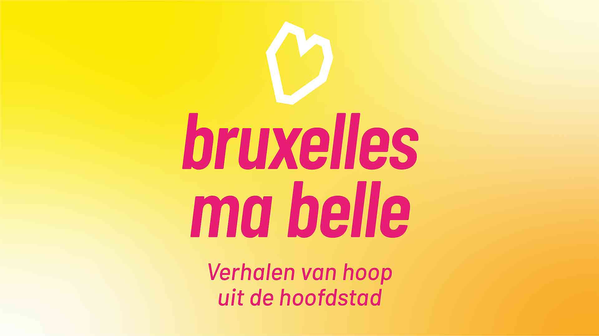

bruxelles ma belle
2024
the brief
I was approached by CCV to design the visual identity for their new podcast series titled "Bruxelles ma belle - verhalen van hoop uit de hoofdstad."
The podcast highlights stories of hope from Brussels. The visual design needed to reflect the project's uplifting theme while being adaptable for digital platforms like their website and SoundCloud.
After receiving the brief, I proposed a meeting to discuss their needs in detail. CCV emphasized the urgency of the project, aiming for a launch before Christmas.

The podcast highlights stories of hope from Brussels. The visual design needed to reflect the project's uplifting theme while being adaptable for digital platforms like their website and SoundCloud.
After receiving the brief, I proposed a meeting to discuss their needs in detail. CCV emphasized the urgency of the project, aiming for a launch before Christmas.
concept development
I created two distinct designs:
1. A modern, minimalistic approach featuring a white heart shape reflecting the Brussels map. This was paired with bold typography in pink and a gradient background transitioning from yellow to orange.
2. A dynamic typographic design integrating subtle cross shapes into the negative space. This version conveyed playfulness while maintaining a professional tone.
Both designs utilized the typeface "Barlow" and colors inspired by CCV's existing branding, ensuring consistency and freshness.
1. A modern, minimalistic approach featuring a white heart shape reflecting the Brussels map. This was paired with bold typography in pink and a gradient background transitioning from yellow to orange.
2. A dynamic typographic design integrating subtle cross shapes into the negative space. This version conveyed playfulness while maintaining a professional tone.
Both designs utilized the typeface "Barlow" and colors inspired by CCV's existing branding, ensuring consistency and freshness.
feedback and revisions
Following a team review, CCV selected version 1 but requested a minor tweak: removing a period after the title. The updated design was delivered promptly. Mockups were also provided to showcase how the design would appear on SoundCloud and other platforms.
deliverables
- Two initial design concepts
- Finalized visual identity for "Bruxelles ma belle"
- Platform-specific mockups for digital use
- Finalized visual identity for "Bruxelles ma belle"
- Platform-specific mockups for digital use
outcome & reflection
CCV was highly satisfied with the final result, describing it as inviting, youthful, and heartfelt.
This project demonstrated the value of clear communication, rapid iteration, and aligning design choices with the client's mission. It also reinforced my commitment to using design to make a positive impact.
This project demonstrated the value of clear communication, rapid iteration, and aligning design choices with the client's mission. It also reinforced my commitment to using design to make a positive impact.